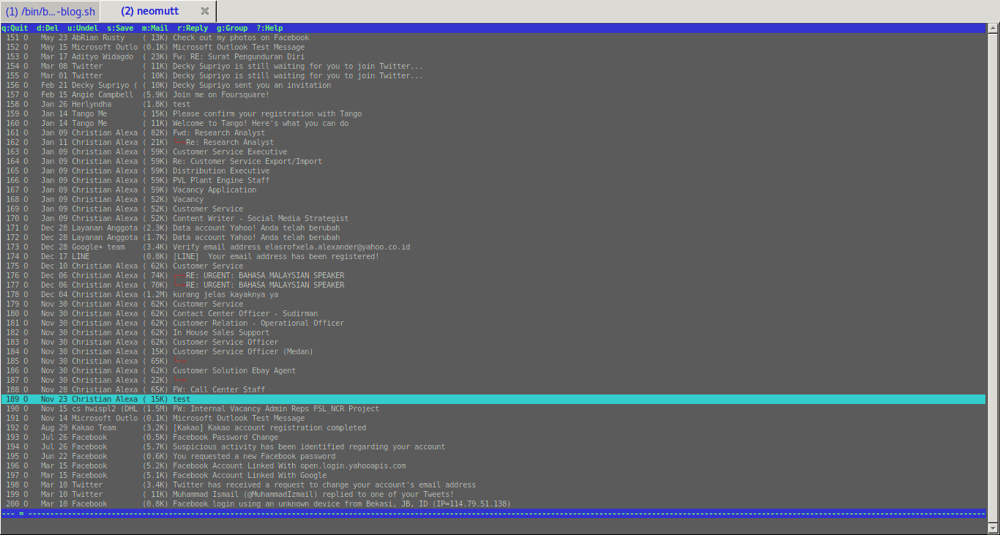

Background mengikuti theme terminal
Edit file ~/.mutt/muttrc, tambahkan baris ini dipaling bawah:
source ~/.mutt/colors
Isi file tersebut (~/.mutt/colors) dengan ini:
color normal white default
color attachment brightyellow default
color hdrdefault cyan default
color indicator black cyan
color markers brightred default
color quoted green default
color signature cyan default
color status brightgreen blue
color tilde blue default
color tree red default
color index red default ~P
color index red default ~D
color index magenta default ~T
color header brightgreen default ^From:
color header brightcyan default ^To:
color header brightcyan default ^Reply-To:
color header brightcyan default ^Cc:
color header brightblue default ^Subject:
color body brightred default [\-\.+_a-zA-Z0-9]+@[\-\.a-zA-Z0-9]+
# identifies email addresses
color body brightblue default (https?|ftp)://[\-\.,/%~_:?&=\#a-zA-Z0-9]+
# identifies URLs

sidebar
Tambahkan baris ini kedalam ~/.mutt/muttrc:
set sidebar_visible
set sidebar_format = "%B%?F? [%F]?%* %?N?%N/?%S"
set mail_check_stats
keybinding untuk sidebar
Tambahkan ini dibaris terakhir dari ~/.mutt/muttrc:
# bindings
source ~/.mutt/bindings
Lalu edit file bindings tersebut:
# sidebar
bind index,pager \Ck sidebar-prev
bind index,pager \Cj sidebar-next
bind index,pager \Cl sidebar-open
Di sesi Mutt/NeoMutt berikutnya, akan muncul sidebar disebelah kiri, dan kita bisa menggunakan bindings yang baru saja kita buat untuk navigasi. Tentunya bindings tersebut bisa kita sesuaikan dengan keinginan.
Multiple account
Salah satu fitur dari msmtp adalah kemampuannya untuk menggunakan lebih dari satu account dalam satu file Konfigurasi('~/.msmtprc). Kita pun bisa memanfaatkan fitur ini didalam neomutt/mutt.
Di post saya sebelumnya sudah dibahas mengenai konfigurasi dari msmtp, dan untuk menyegarkan ingatan, ini adalah konfigurasi penuh saya:
# Set default values for all following accounts.
defaults
logfile ~/.msmtp.log
#aliases /etc/aliases
# Gmail
account gmail
auth on
tls on
tls_trust_file /etc/ssl/certs/ca-certificates.crt
host smtp.gmail.com
port 587
from alexarians@gmail.com
user alexarians@gmail.com
passwordeval "gpg --quiet --for-your-eyes-only --no-tty --decrypt ~/.msmtp-gmail.gpg"
# Yahoo service
account yahoo
auth on
tls on
tls_trust_file /etc/ssl/certs/ca-certificates.crt
host smtp.mail.yahoo.com
port 587
from alexforsale@yahoo.com
user alexforsale
passwordeval "gpg --quiet --for-your-eyes-only --no-tty --decrypt ~/.msmtp-yahoo.gpg"
# Hotmail
account hotmail
tls on
tls_certcheck off
host smtp.live.com
from christian.alexander@windowslive.com
auth on
user christian.alexander@windowslive.com
passwordeval "gpg --quiet --for-your-eyes-only --no-tty --decrypt ~/.msmtp-hotmail.gpg"
# Set a default account
account default : gmail
Terlihat lebih aman karena semua password di encrypt menggunakan GnuPG. Jadi saya memiliki tiga akun smtp yang bisa saya pilih. Dan untuk menggunakannya didalam Mutt/NeoMutt tambahkan baris ini di ~/.mutt/muttrc:
send2-hook '~f alexarians@gmail.com' 'set sendmail="/usr/bin/msmtp"'
send2-hook '~f alexforsale@yahoo.com' 'set sendmail="/usr/bin/msmtp -a yahoo"'
send2-hook '~f alexforsale@hotmail.com' 'set sendmail="/usr/bin/msmtp -a hotmail"'
Tentunya sesuaikan terlebih dahulu email yang digunakan, lokasi dari binary msmtp-nya. Untuk penjelasan dari argumen diatas:
-
send2-hook: Ketika ada pattern berubah (baik melalu edit atau menu compose), perintah dieksekusi. Sedangkan untuk -
'-f expression': Artinya message yang berasal dari expression tersebut. -
set sendmail: Adalah perintah yang harus dieksekusi berdasarkan expression, note untuk alexarians@gmail.com perintah msmtp tidak menggunakan parameter tambahan karena merupakan default di msmtprc.